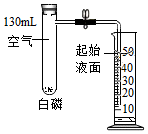
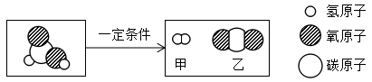

2020年北京市中考化学试题 · 选择题 第11、12题
11.利用如图装置验证了空气中氧气的含量。下列叙述不正确的是

A. 实验前需检查装置气密性
B. 白磷的作用是消耗试管中的氧气
C. 白磷熄火、试管冷却后再打开止水夹
D. 最终量筒中液面约降至40mL刻度线处
12.甲酸（HCOOH）具有清洁制氢的巨大潜力，其分解前后分子种类变化的微观示意图如下：

下列说法正确的是
A. 甲酸分子中氢、氧原子个数比为1:2
B. 乙中碳、氧元素质量比为1：2
C. 46g甲酸中氢元素质量为2g
D. 生成甲与乙的分子个数比为2：1